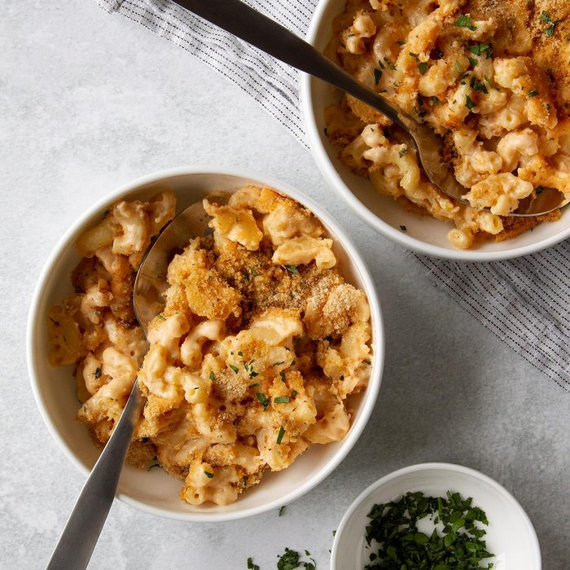

Mac and cheese

Description
An easy to make mac and cheese recipe.
For whenever you have cheese.
Ingredients
- approx. 450g dry pasta
- .5 cup unsalted butter
- .5 cup all purpose flour
- 1.5 cup whole milk
- 2.5 cup half and half
- 4 cup grated medium sharp cheddar cheese
- 2 cup grated Gruyere cheese
- .5 tbsp salt
- .5 tsp black pepper
- .25 tsp paprika
Steps
- Preheat oven to 162 degrees celcius. Grease a baking dish and set aside.
- Bring a pot of salted water to boil. Add dried pasta and cook for 1 min less than package instructions for al dente. Drain, drizzle with some olive oil.
- As water comes up to a boil, grate and mix cheese. Divide into 3: 3 cups for the sauce, 1.5 cups for the inner layer, 1.5 cups for topping.
- Melt butter in a large saucepan over medium heat. Sprinkle in and mix flour, cook for 1 min, whisking often. Slowly pour in about 2 cups or so of the milk/half and half, while whisking constantly, until smooth. Slowly pour in the remaining milk/half and half, while whisking constantly, until combined and smooth.
- Continue to heat and stir until consistency of condensed soup
- Remove from the heat and stir in spices and 1 1/2 cups of the cheeses, stirring to melt and combine. Stir in another 1 1/2 cups of cheese, and stir until completely melted and smooth.
- In a large mixing bowl, combine drained pasta with cheese sauce, stirring to combine fully. Pour half of the pasta mixture into the prepared baking dish. Top with 1 1/2 cups of grated cheeses, then top that with the remaining pasta mixture.
- Sprinkle the top with the last 1 1/2 cups of cheese and bake for 15 minutes, until cheesy is bubbly and lightly golden brown.